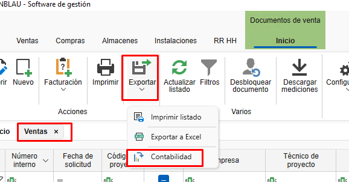

Importación programa de contabilidad
1. Objetivo
Establecer los requerimientos técnicos necesarios para que ENBLAU pueda generar archivos compatibles con el programa de contabilidad, utilizando transformación de datos mediante XSLT y exportación a formatos específicos, con las codificaciones aceptadas.
2. Requerimientos generales
2.1. Formato de Entrada
- El sistema externo deberá generar archivos en formato XML como base para la transformación.
- El archivo XML debe cumplir con la estructura establecida en el esquema XSD (si aplica).
- Se debe proporcionar un protocolo claro de mapeo de campos.
2.2. Transformación
- La transformación del XML a formato de importación será realizada mediante un archivo XSLT proporcionado por el proveedor o desarrollado internamente.
- El archivo XSLT debe cumplir con la especificación 1.0 o 2.0 según compatibilidad con el motor XSLT del sistema.
2.3. Formato de exportación
- El resultado de la transformación debe generarse en uno de los siguientes formatos, según lo definido para cada tipo de operación contable:
| Tipo de Archivo | Descripción |
|---|---|
.dat |
Formato de texto plano estructurado |
.txt |
Texto delimitado (ej. tabulador, coma) |
.xml |
Estructura XML compatible |
.xlsx |
Hoja de cálculo (Excel) |
2.4. Codificación de texto
- La codificación de los archivos debe ser una de las siguientes, según el tipo de archivo:
| Codificación | Recomendado para |
|---|---|
| ANSI | .txt, .dat antiguos |
| UTF-8 | .xml, .txt modernos |
| UTF-16 | .xml con caracteres especiales |
| UNICODE | General para archivos multilenguaje |
3. Protocolo de integración
3.1. Enlace de la plantilla XSLT
El proveedor del sistema contable deberá proporcionar el archivo XSLT base y la documentación con el protocolo con el formato del fichero para realizar la transformación.
3.2. Especificación de Mapeo de Campos
Debe entregarse un documento que detalle:
- Nombre del campo en el sistema origen
- Posiciones
- Longitud (caracteres)
- Tipo de dato (numérico, texto, fecha)
- Formato requerido (ej:
dd/MM/yyyy,#,##0.00, etc.)
Ejemplo de tabla de mapeo:
A continuación se detalla la estructura esperada para el archivo de importación según el Tipo de registro = 0, correspondiente a Alta de Apuntes sin IVA.
| Posiciones | Longitud (caracteres) | Descripción del Campo | Comentarios |
|------------|------------------------|--------------------------|----------------------------------------------------------------------------|
| 1 | 1 | Tipo de Formato | Constante `5` |
| 2 a 6 | 5 | Código de empresa | Valores entre `00001` y `99999` |
| 7 a 14 | 8 | Fecha del apunte | Formato `aaaammdd` (Ejemplo: 1 de febrero de 2000 → `20000201`) |
| 15 | 1 | Tipo de Registro | Constante `0` |
| 16 a 27 | 12 | Cuenta | Nivel 6 a 12. Si no existe la cuenta, se dará de alta automáticamente. |
Observaciones:
- Este formato debe generarse como un archivo de texto plano (
.txto.dat) con codificación ANSI. - Los campos deben ocupar exactamente las posiciones indicadas. No debe haber delimitadores.
- Todos los registros deben cumplir con la estructura de longitud fija para ser válidos.
4. Transformación desde XML con XSLT
La estructura anterior puede generarse a partir de un archivo XML de entrada, transformado con una plantilla XSLT. Se recomienda que el archivo XML tenga los siguientes nodos mínimos:

4.1. Ejemplo de Archivo Generado
A continuación se muestra un ejemplo de línea generada para el archivo .dat con formato de ancho fijo según los campos definidos:
-
Valores de ejemplo:
- Tipo de Formato:
5 - Código de Empresa:
00001 - Fecha del Apunte:
20250728(28 de julio de 2025) - Tipo de Registro:
0 - Cuenta:
430000000001
- Tipo de Formato:
-
Resultado en el archivo
.dat:
500001202507280430000000001
-
Detalle por secciones:
Posiciones Contenido Descripción 1 5Tipo de Formato 2 a 6 00001Código de empresa 7 a 14 20250728Fecha del apunte 15 0Tipo de Registro 16 a 27 430000000001Cuenta
⚠️ ¡Importante!
- No se deben incluir separadores, espacios adicionales, ni saltos de línea entre campos.
- Cada línea representa un registro. Si hay múltiples apuntes, deben ir en líneas separadas, una por registro.
-
Ejemplo con varios registros:
500001202507280430000000001
500002202507280410000000010
500003202507280460000000050
5. Validaciones previas
- El archivo XML debe pasar validación estructural (bien formado y, si aplica, válido contra XSD).
- La salida del XSLT debe revisarse para asegurar compatibilidad con el formato de importación contable.
6. Proceso de importación y exportación desde ENBLAU
-
Descarga los dos archivos .xls (ventas y compras) proporcionado por Endades, guárdalos en la siguiente ruta: Enblau Documentos\Documentos\Contabilidad. (Recomendamos esta ubicación porque es una carpeta compartida). Si la carpeta Contabilidad dentro de Documentos no existe, créala.

-
Abre ENBLAU y dirígete a:
-
Ventas → Documento de venta → Exportar → Contabilidad.

-
-
Se abrirá una ventana de Contabilidad.
- Haz clic en Añadir una línea.
-
Se abrirá el explorador de archivos para seleccionar la ruta donde se encuentra el archivo ejemplo: transform_ventas.xls.

-
Se generará automáticamente una línea con el nombre Contabilidad 1 (puedes editarlo, por ejemplo, Contabilidad Ventas).
- Seleccionar los parámetros:
- Extensión: .dat, .xlsx, .txt o .xml.
- Codificación: ANSI, UNICODE, UTF-8 o UTF-16.
-
Se mostrará la ruta donde se exportará el archivo en el formato de la extensión escogida.

-
Luego Exportar el fichero:

- En la ruta de exportación (en este caso, la misma que la del fichero de exportación), verás que se ha generado un archivo con la información de la factura de venta.
- Si tienes algún filtro aplicado en el listado de documentos de ventas, solo aparecerán los datos que cumplan con ese filtro.
-
El archivo exportado tendrá el formato según la extensión seleccionada y el fichero .xsl que aplica la transformación del archivo (en la ruta fichero de explotación). Ejemplo:

-
Una vez hayas exportado el fichero en el formato correcto desde ENBLAU, el siguiente paso es importarlo en el programa de contabilidad que estéis utilizando.
Observaciones
- Cualquier cambio en el formato fuente XML o en la estructura del archivo XSLT debe ser documentado y validado antes de ser implementado en producción.
- Es recomendable mantener un control de versiones tanto de los XSLT como de los esquemas XML.
 Español
Español
 English
English
 Italiano
Italiano
 Português
Português